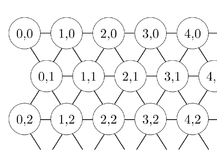

Un-Supervised learning in Artificial Neural Networks
Topics to study are:
- Winner-take-all Networks
- Hamming networks
- Adaptive resonance theory (ART)
- Types of ART
- Basic of ART architecture
- Advantage of ART
- Limitations of ART
- Kohonen's self-organizing maps
- Structure
- Properties
- Variables
- Algorithm
- Formulae
Winner-take-all networks
- Winner-take-all is a computational principle applied in computational models of neural networks by which neurons in a layer compete with each other for activation.
- In-short one can say that only the neuron with the highest activation stays active while all other neurons shut down.
- It is a case of competitive learning in recurrent neural networks.
- Basic working of the winner-take-all is as:
- As the network takes input and starts its processing, weights get arranged, calculated and the activation values of the neurons start to compute at the output.
- After some time, when the activation values are computed, only one node in the output layer will be active, namely the one corresponding to the strongest input.
- This the network uses nonlinear inhibitio to pick out the largest of a set of inputs.
- Winner-take-all is a general computational primitive that can be implemented using different types of neural network models, including both continous-time and spiking networks.
- Important examples include heirarchical models of vision, and models of selective attention and recognition.
- They are also common in artificial neural networks and neuromorphic analog VLSI circuits.
- It has been formally proven that the winner-take-all operation is computationally powerful compared to other non-linear operations, such as thresholding.
- In many practical cases, there is not only a single neuron which becomes the only active one but there are exactly k neurons which become acgive for a fixed number k. This priniciple is referred to as k-winners-take-all.
- In some sense it can be said that winner take all hypothesis suggests that once a technology or a firm gets ahead, it will do better and better over time, whereas lagging technology and firms will fall further behind.
Hamming Neural Network (HNN)
- The Hamming network performs the task of pattern association, or classification, based on measuring the hamming distance.
- Lippmann (1987) modelled a two layer bipolar network called Hamming neural network. The first layer is the Hamming net and the second llayer is the MAXNET.
- The first layer is a feed forward type network which classifies the input patterns based on minimum Hamming distance. The Hamming distance (HD) between any two vectors is the number of components in which the vectors differ.
- The Hamming net uses MAXNET in the second layer as a subnet to find the unit with the largest net input. The second layer operates as recurrent recall network which supresses all the outputs except the initially obtained maximum output of the first layer.
- Using a Hamming network has several advantages:
- It requires fewer connections than the Hopfield network.
- It implements the "optimum minimum error classifier when bit errors are random and independent", that is, the network always converges and finds the output node with maximum value.

A hamming Neural network
Adaptive Resonance Theory (ART)
- Adaptive resonance theory is a type of neural network technique developed by Stephen Grossberg and Gail Carpenter in 1987.
- The term "adaptive" and "resonance" used in this suggests that they are open to new learning (i.e. adaptive) without discarding the previous or the old information(i.e. resonance).
- The basic ART uses unsupervised learning technique.
- The ART networks are known to solve the stability-plasticity dilemma i.e., stability refers to their nature of memorizing the learning and plasticity refers to the fact that they are flexible to gain new information.
- Having the nature of ART to solve stability-plasticity dilemma, they are always able to learn new input patterns without forgetting the past.
- As in basic ART networks implement a clustering algorithm. Input is presented to the network and the algorithm checks whether it fits into one of the already stored clusters. If it fits then the input is added to the cluster that matches the most else a new cluster is formed.
Types of Adaptive Resonance Theory (ART)
Carpenter and Grossberg developed different ART architectures as a result of 20 years of research. The ART's can be classified as follows:
- ART1 - It is the simplest and the basic ART architecture. It is capable of clustering binary input values.
- ART2 - It is extension of ART1 that is capable of clustering continuous-values input data.
- Fuzzy ART - It is the augmentation of fuzzy logic and ART.
- ARTMAP - It is a supervised form of ART learning where one ART learns based on the previous ART module. It is also known as predictive ART.
- FARTMAP - This is a supervised ART architecture with Fuzzy logic included.
Basic of ART architecture
- The ART theory is a type of neural network that is self-organizing compettive. It can be of both types, the unsupervised ones(ART1, ART2, ART3, etc) or the supervised ones (ARTMAP). Generally the supervised algorithms are named with suffix "MAP".
- But the basic ART model is unsupervised in nature and consists of:
- F1 layer or the comparison field (where the inputs are processed)
- F2 layer or the recognition field (which consists of the clustering units)
- The reset module (that acts as a control mechanism)
- The F1 layer accepts the inputs and performs some processing and transfers it to the F2 layer that beest matches with the classification factor.
- There exist two sets of weighted interconnection for controlling the degree of similarity between the units in the F1 and the F2 layer. The F2 layer is a competitive layer. The cluster unit with the large net input becomes the candidate to learn the input pattern first and the rest F2 units are ignored.
- The reset unit makes the decision whether or not the cluster unit is allowed to learn the input pattern depending on how similar is top-down weight vector is to the input vector and to the decision. This is called the vigilance test.
- Thus we can say that the vigilance parameter helps to incorporate new memories or new information. Higher vigilance produces more detailed memories, lower vigilance produces more general memories.
- Generally two types of learning exits, slow learning and fast learning.
In fast learning, weight update during resonance occurs rapidly. It is used in ART1.
In slow learning, the weight change occurs slowly relative to the duratiion of the learning trial. It is used in ART2.
Advantages of ART
- It exhibits stability and is not disturbed by a wide variety of inputs provided to its network.
- It can be integrated and used with various other techniques to give more good results.
- It can be used for various fields such as mobile robot control, face recognition, land cover classification, target recognition, medical diagnosis, signature verficiation, and clustering web users, etc.
- It has got advantages over competitive learning (like bpnn etc.). The competitive learning lacks the capability to add new clusters when deemed necessary.
- It does not guarantee stability in forming clusters.
- It does not guarantee stability in forming clusters.
Limitations of ART
- Some ART networks are inconsistent (like the Fuzzy ART and ART1) as they depend upon the order in which training data, or upon the learning rate.
Kohonen's self organising maps
- Pioneered in 1082 by finnish professor and researcher Dr. Teuvo Kohonen, a self-organising map is an unsupervised learning model, intended for applications in which maintining a topology between input and output space is of importance.
- The notable characteristic of this algorithm is that the input vectors that are close -- similar -- in high dimensional space are also mapped to nearby nodes in the 2D space.
- It is in essence a method for dimensionality reduction, as it maps high-dimension inputs to a low (typically two) dimensional discretised representation and conserves the underlying strucutres of its input space.
- A valuable detail is that the entire learning occurs without supervision i.e. the nodes are self-organising. They are called feature maps, as they are essentially retraining the features of the input data, and simply grouping themselves according to the similarity between one another.
- This has a pragmatic (superior) value for visualising complex or large quantities of high dimensional data and representing the relationship between them into a low, typically two-dimensional, field to see if the given unlabelled data has any structure to it.
Structure

Kohonen Architecture
- A Self-Organizing Map (SOM) differs from typical ANNs both in its architecture and algorithmic properties.
- Firstly, its structure comprises of a single-layer linear 2D grid of neurons, instad of series of layers.
- All the nodes on this grid are connected directly to the input vector, but not to one another, meaning the nodes do not know the values of their neighbours, and only update the weights of their connections as a function of the given inputs.
- The grid itself is the map that organises itself at each iteration as a function of the input of the input data.
- As such, after clustering each node has its own (i,j) coordinate, which allows one to calculate the Euclidean distance between 2 nodes by means of the Pythagorean theorem.
(a)

(b)
Kohonen network's nodes can be in a (a) rectangular or (b) hexagonal topology.
Properties
- A self-organising map, additionally, uses competitive learning as opposed to error-correction learning, to adjust it weights. This means that only a single node is activated at each iteration in which the features of an instance of the input vector are presented to the neural network, as all nodes compete for the right to respond to the input.
- The chosen node -- the Best Matching Unit (BMU) -- is selected according to the similarity, between the current input values and all the nodes in the grid.
- The node with the smallest Euclidean difference between the input vector and all nodes is chosen, along with its neighbouring nodes within certain radius, to have their position slightly adjusted to match the input vector.
- By goind trough all the nodes present on the grid, the entire grid eventually matches the complete input dataset, with similar nodes grouped together towards one area, and dissimilar ones separated.
A Kohonen model with the BMU in yellow, the layers inside the neighbourhood radius in pink and purple, and the nodes outside in blue.
Variables
- t is the current iteration
- n is the iteration limit, i.e. the total number of iterations the network can undergo
- λ is the time constant, used to decay the radius and learning rate
- i is the row coordinate of the nodes grid
- j is the column coordinate of the nodes grid
- d is the distance between a node and the BMU
- w is the weight vector
- w_ij(t) is the weight of the connection between the nodes i,j in the grid, and the input vector’s instance at the iteration t
- x is the input vector
- x(t) is the input vector’s instance at iteration t
- α(t) is the learning rate, decreasing with time in the interval [0,1], to ensure the network converges
- β_ij(t) is the neighbourhood function, monotonically decreasing and representing a node i, j’s distance from the BMU, and the influence it has on the learning at step t
- σ(t) is the radius of the neighbourhood function, which determines how far neighbour nodes are examined in the 2D grid when updating vectors. It is gradually reduced over time
Algorithm
- Initialise each node’s weight w_ij to a random value
- Select a random input vector x_k
- Repeat point 4. and 5. for all nodes in the map:
- Compute Euclidean distance between the input vector x(t) and the weight vector w_ij associated with the first node, where t, i, j = 0
- Track the node that produces the smallest distance t
- Find the overall Best Matching Unit (BMU), i.e. the node with the smallest distance from all calculated ones
- Determine topological neighbourhood βij(t) its radius σ(t) of BMU in the Kohonen Map
- Repeat for all nodes in the BMU neighbourhood: Update the weight vector w_ij of the first node in the neighbourhood of the BMU by adding a fraction of the difference between the input vector x(t) and the weight w(t) of the neuron
- Repeat this whole iteration until reaching the chosen iteration limit t=n
Step 1 is the initialisation phase, while step 2–9 represent the training phase
Formulae
- The updates and changes to the variables are done according to the following formulae:
- The weights within the neighbourhood are updated as:
- The first equation tell us that the new updated weight wij(t+1) for the node i,j is equal to the sum of the old weight wij(t) and a fraction of the difference between the old weight and the input vector x(t). In other word, the weight vector is 'moved' closer towards the input vector. Another important element to note is that the updated weight will be proportional to the 2D distance between the nodes in the neighbourhood radius and the BMU.
- The first equation does not account for the influence of the learning being proportional to the distance a node is from the MBU. The updated weight should take into factor that the effect of the learning is close to none at the extremities fo the neighbourhood, as the amount of learning should decrease with distance. Therefore, the second equation adds the extra neighbourhood function factor of βij(t), and is the more precise in-depth one.
- The radius and learning are both similarly and exponentially decayed with time.
- The neighbourhood function's influence βi(t) is calculated by:
- The Euclidean distance between each node's weight vector and the current input instance is calculated by the Pythagoran formula
- The BMU is selected from all the node's calculated distances as the one with the smallest